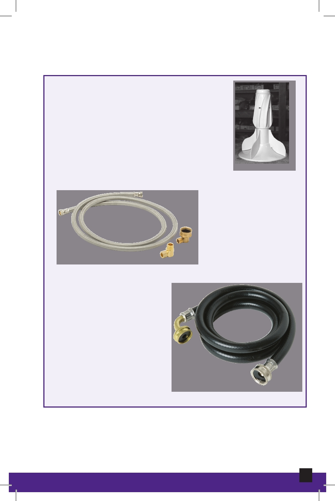

Clothes Washer
Agitator
The finned apparatus in the center of
upright washing machines that moves
back and forth or up and down to
clean laundry.
Agitator
Drain Hose
Removes the dirty
water from the washer
prior to the spin cycle.
Drain Hose
Inlet Hoses
Fill the clothes washer
with hot, cold, or warm
clean water.
Inlet Hoses
62
Appliance Maintenance and Repair